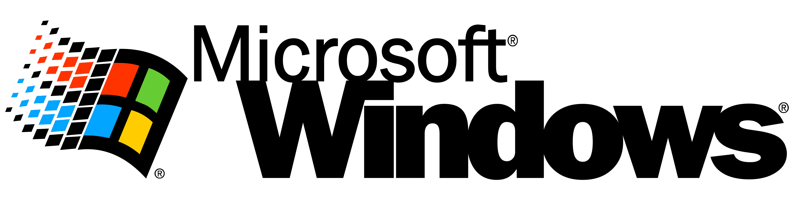
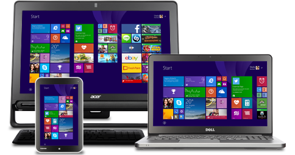

Programação Web I
|
Microsoft - Abrindo Janelas |
Desenvolvimento de Sistemas Programação Web I |
||
| Home | Criação | Atualidade | Cadastro | Créditos |
| O Windows é o principal sistema operacional em utilização no mundo, sendo utilizado por cerca de 75% dos computadores de todo o mundo. Desde 1985, o Microsoft Windows é conhecido por sua interface intuitiva e revolucionária desde o momento de seu lançamento; Seu nome (que vem do inglês, janelas.), se refere ao meio gráfico que ficou reconhecido, pelas suas abas de programas no formato de uma janela. Sendo um marco principalmente, para como o computador é utilizado nos meios pessoais e comerciais, se mantém firme como o sistema operacional mais conhecido e usado no mundo. |  | |||
|
Sua primeira versão era uma simples interface visual, lançada com alguns recursos básicos de uso
pessoal. Utilizava a arquitetura
MS-DOS precursora do atual Windows NT; Em resumo era um gerenciador de alguns aplicativos básicos,
mas que no futuro, levariam a
Microsoft para um outro patamar de mercado. Suas versões mais conhecidas na época foram os
Windows 3.X (3, 3.1, 3.2). Destaque para a criação do Windows Server (na época, Windows NT
Server). A revolução veio em 1995, com a glória que mudaria o mercado inteiro. Com um agora sistema operacional completo, foi o maior lançamento de um sistema do tipo na época, sendo aguardado e admirado por milhares de pessoas, por seus conceitos que hoje parecem simples, mas que na época abriu uma maré de possibilidades, como o menu iniciar, a barra de tarefas, fácil manuseio e tecnologia Plug-In-Play, esse foi o Windows 95. Mais atualizações e versões vieram, com foco em internet e melhorias, mas no ano de 2001, surgiu aquele que é considerado o O.S. mais utilizado de todos os tempos, trazendo um visual completamente diferente de tudo antes visto, com mais integração à cores, mais recursos de seguranças, a arquitetura Windows NT, mais suavidade e o icônico papel de parede bliss, o Windows XP. Após o turbulento Windows Vista, chegou ao mercado o Windows 7, com um sistema mais fluido, com segurança reforçada, melhoras significativas em recursos e um visual aero marcante; É reconhecido como a versão "definitiva" dos Windows. Mais versões se passam, como o Windows 8, duramente criticado pela remoção do menu iniciar, a versão Windows 8.1 que trouxe melhoras, o Windows 10, apontado como uma das mais marcantes, estáveis e a mais usada hoje em dia, e até o momento, o Windows 11, com um visual mais minimalista e com segurança mais reforçada ainda, integração básica ao Copilot (IA), entre outros aspectos (e polêmicas, como possíveis spywares e instabilidades do sistema). |
||||
| O Windows é um marco da tecnologia, e suas integrações a ferramentas essenciais como o pacote Office (Word, Excel, Powerpoint entre outros) fez com que a Microsoft se estabelecesse como a grande empresa de tecnologia até os dias de hoje. Sua presença mundial se tornou um ecossistema em que todos os programas essenciais possuem uma compatibilidade lógica para sua arquitetura. Ao crer em uma interface intuitiva e fácil de manipular, a big tech norte-americana garantiu que sua marca estivesse em todos os setores tecnológicos mundiais, se aprimorando, inovando e adaptando ao longo do tempo. |  | |||